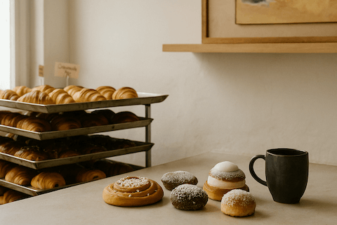

Welcome to Fika Time
Hej and welcome to Fika Time. This is your cozy space online where we celebrate the beauty of Swedish coffee culture. Fika Time is here to inspire slower moments, thoughtful breaks, and the joy of sweet traditions. Whether you're a curious traveler or someone who just loves the idea of slowing down with coffee and something freshly baked, you're in the right place. Here you'll find stories, guides, and beautiful details from the world of fika. So make yourself a cup, grab a bun, and stay awhile. You're always welcome here.